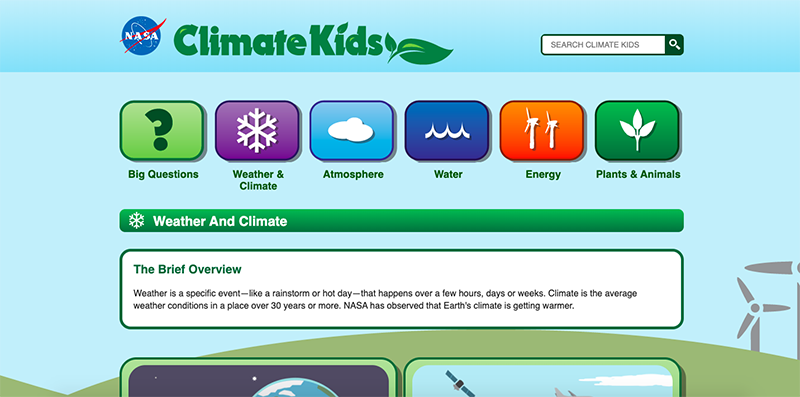
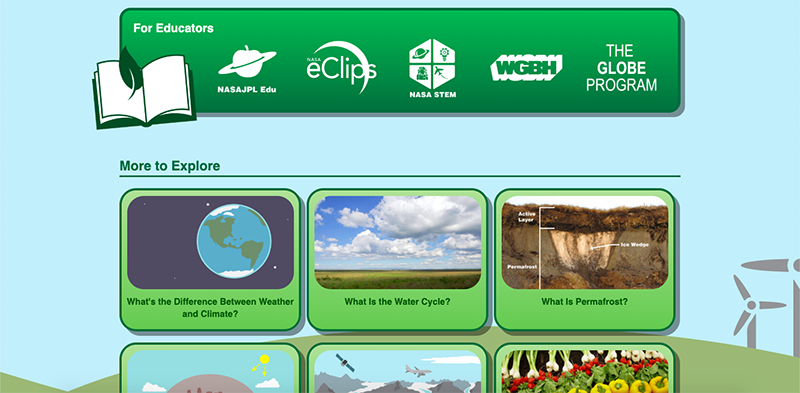

I want to do an interactive design on topics related to human carbon emissions and the environment. Therefore, I browsed some related websites. Among them, two impressed me very much. One is particularly organized. From layout to content to interactive design, I feel very human. The other one made me feel dull and confused from the beginning.
The climatekids.nasa.gov is one of my favorite websites. It is a comprehensive introduction to environmental issues, like science education. But unlike other educational websites, the information on this website is based on simple hand-drawing. Every message is clear and easy to understand. And the overall page gives a very clear and unified feeling. It does not make users feel boring and impatient when browsing this page.
First of all, I really like its layout. From its navigation to its information and content distribution, each part is very simple and clear. This is very easy for users to operate and understand. Then, its font, color, and shape are very uniform and harmonious. From top to bottom, the unified margin and padding look very comfortable and coherent. The spatial arrangement of the webpage is very reasonable.
As for its content, a large part of users is for children. Unlike a serious scientific explanation website, the entire content of this website is expressed in the form of animation. The designer uses simple pictures to express their profound meaning. While conveying information, it also allows users to clearly understand the content.
I really appreciate its overall style and the way it is expressed. The only thing that I think can be improved is its undo operation. Since this is a popular website, it has a lot of information content. It's easy to click on unwanted content. However, it seems that there is no link operation that can return to the previous step except for the general menu above.